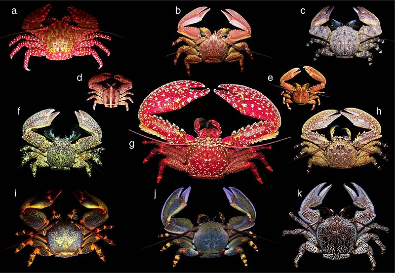
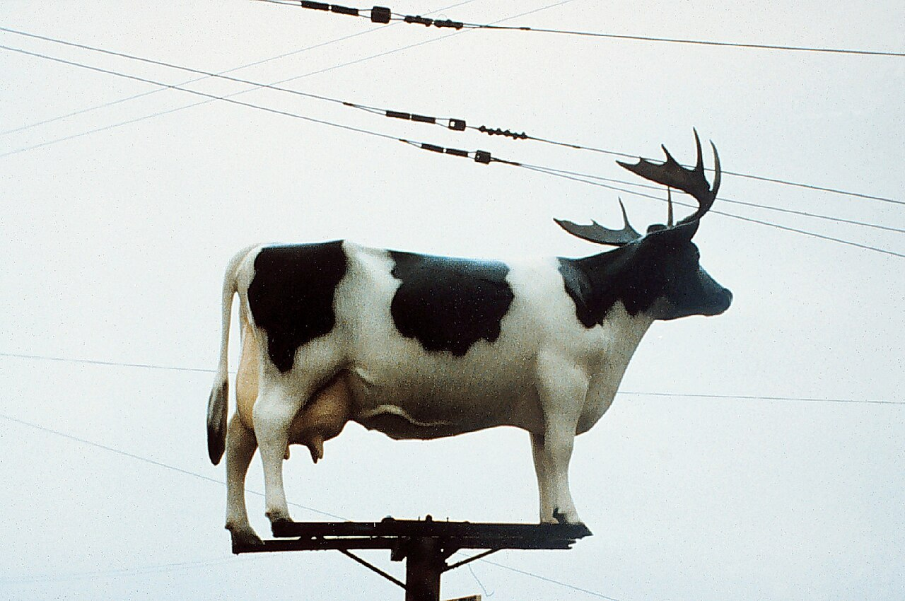

What is "Wikirabbithole" ?
Who doesn't love going down the occasional random rabbit hole about some
information that will likely never serve a use? I certainly do!
Especially those within the absolute delight that is the website
Wikipedia, which with their 6.8 million articles (in English alone), is
a near endless trove of easily accessable knowledge. Thanks to the
hyperlinks leading to other articles seamlessly incorporated into almost
every article, letting you jump from read to read for hours on end,
making Wikipedia a wonderful way to spend time going down a rabbit hole.
Here is exactly where this blog comes into play, helping you get started
down your dossier descent, with some handpicked articles that I
personally find interesting.


Artist's concept art of the Earth 5–7.5 billion years from now, when
the Sun has become a red giant. As it's helium supply exhausts, it
moves onto heavier elements for fusion, causing it to grow in size and
temperature, graudually roasting Earth until it becomes hellish and
uninhabitable. In other words, the trout population will be affected.
What better article to start off your rabbit hole journey than the
ULTIMATE list of spoilers (that may or may not give you an existential
crisis)? In my opinion, this is one of the most interesting reads on
Wikipedia, and if you're interested in astrophysics, particle phyisics,
evolutionary biology, sociology, or human technology/culture, you'll
hopefully agree. Or maybe you or just want to know what'll happen in the
countless millennia long after you've been forgotten. Either way, there
are plenty of hyperlinks all throughout that will ensure an enjoyable
rabbit-holing (especially if any of the previously mentioned fields are
up your alley!)
A photo of Penrose Triangle, made of what appears to be Lego Duplo
bricks. Technically, this isn't a paradox but rather an optical
illusion, but illusions are more thought experiments than tangible
things you can make, so you just gotta to bear with me here.
Paradoxes! These thought experiments can range from being a simple
self-contradictory statement to confoundingly complex. Aside from being
(occasionally) hard to understand, some of the articles written here are
simply just interesting to read about. Although several of the paradoxes
listed here have been disproved/have had solutions found, browsing
through this list makes for a great way to spend some time and
brainpower. These paradoxes span a multitude of subjects, covering areas
such as logic, mathematics, physics, economics, and much more, and with
340 different paradoxes, you're bound to come across one that you like,
even if you hate thinking too hard.
A photo the sculpture,
Kryptos, located on the grounds of the CIA headquarters, the George Bush
Center for Intelligence in Langley, Virginia. One of, if not the most
famous unsolved cryptograms (and cryptograms in general). Also one of
my personal favorites, along with
Cicada 3301and the
Zodiac Killer
ciphers. Click on the underlined words to visit those articles, I
highly reccomend them :❩
Cryptograms, especially ones that are unsolved, are always an extremely
interesting read. Even since (at the very earliest) the (Minoan) Bronze
Age, humans have been creating encrypted messages, with varying degrees
of success. Some cryptograms, such as the Phiastos Disc from 2nd
millennium BC have had their contents/meanings remain a mystery even
until the modern day, 3 to 4 thousands of years since their initial
creation. Others, such as Kyrptos, or the Zodiac Killer ciphers, have
been created in the current century and have gained both fame and
notoriety, especially because of the fact that they remain partially
solved, meaning that the full deciphering of these cryptic messages are
just out of reach. All in all, despite this being a shorter list, it is
all an incredibly interesting read.

A staggering number of skeletons lying on the floor (or on each
other, with how many there are) in the popular MMORPG World of
Warcraft, each of them being a death from a player infected with the
Corrupted Blood debuff. Thank you Rae for the article reccomendation
:D
When one hears the words "World of Warcraft", it should be safe to
assume that the game has NOT had an impact as a research model
for a disease outbreak used by the CDC and has NOT been
compared to the COVID-19 pandemic, but BOTH these assumptions are WRONG
somehow!!! Thanks to a software bug that slipped by Blizzard devs, an
extremely deadly debuff given during a boss battle that should have been
contained to ONLY that boss battle was able to spread to
players beyond its intended reach, killing countless players and
especially crippling densely populated non-combat zones. It got so bad,
in fact, that Blizzard had to institute quarantine zones (which didn't
work as they were bypassed), hotfixes (which ALSO didn't work),
and eventually forced them to hard reset the WoW servers after a WEEK
without finding a way to stop this virus. (Also, Mr. Whalen, I know you
said you wouldn't read the wikipedia pages unfortunately but the
comments on
this link) are great (plus deniz told me you love reddit (doubting you love that
subreddit specifically but eh)). Despite its completely accidental
nature, this incident bore several resemblances to real world pandemics,
so much so that the CDC (not making this up) contacted Blizzard after
the incident, asking if they could use data from what they saw as a
"planned disease simulation" to aid their disease modeling research.
Along with being compared to COVID-19 (with many similarities between
what occured in game with the real world pandemic, such as impact on
dense urban areas, first responders, and healthcare workers who were
overrun with patients got infected themselves), Corrupted Blood has also
been compared to avian influenza AND the 2002-2004 SARS outbreak. It has
also been considered as a model for bioterrorism research! Keep in mind
this was all in WORLD OF WARCRAFT

The ultimate, final lifeform -
crabs. Crustaceans may evolve how they wish, but eventually, it all comes
back to crab shape.
Have you ever wondered what peak evolution looks like, or perhaps what
the "final" form of evolution is (for crustaceans at least)? Its a
crab.
The answer is
crab.
crabs
(plural) even.
decapod crustaceans of the infraorder Brachyura. "crabs
aren't the best!" ←- WRONG. if
crabs
the best then why does everything keep evolving into
crabs?????? BOOM ARGUMENT SEALED
CRABS
ON TOP FOREVER BABY WOOOOOOOOOOOOOOOOOOOOOO
im losing my mind
Thank you Rae for the article reccomendation (again)!

A majestic image of a cow with antlers atop a power line pole. Since
there are thousands of links to other articles in this list, each with
an image that could be assigned to them, I decided to just put the
first image you see on the website. As Wikipedia so eloquently puts
it, "Wikipedia contains other images and articles that are
similarly shocking
or udderly amoosing".
write this later